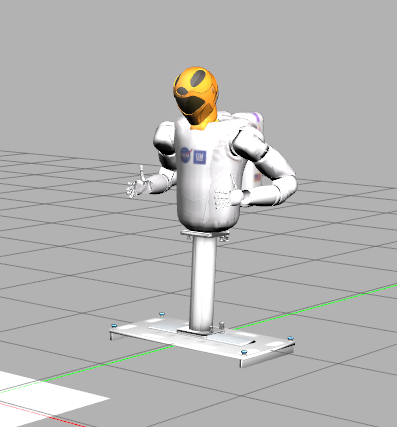

In this blog we ll generate write code to control NASA robot “Robonaut2” deployed in International space station. This blog is heavily influenced from Programming Robots with ROS book from Morgan Quigley which I highly recommend.
> sudo apt-get install ros-melodic-ros-control ros-melodic-gazebo-ros-control ros-melodic-joint-state-controller ros-melodic-effort-controllers ros-melodic-joint-trajectory-controller ros-melodic-moveit* ros-melodic-octomap* ros-melodic-object-recognition-*
> mkdir -p ~/chessbot/src
> cd ~/chessbot/src
> git clone https://github.com/plskeggs/nasa_r2_simulator.git
> git clone https://github.com/plskeggs/nasa_r2_common.git
> cd ..
> catkin_make
> source devel/setup.bash
> roslaunch r2_gazebo r2_gazebo.launchYou should see a R2 robot in Gazebo

#terminal 1
source devel/setup.bash
roslaunch r2_gazebo r2_gazebo.launch
#terminal 2
source devel/setup.bash
rosrun robot_state_publisher robot_state_publisher
#terminal 3
source devel/setup.bash
roslaunch r2_moveit_config move_group.launch
#terminal 4
source devel/setup.bash
python2 <script.py>Moving with MoveIt
MoveIt is a comprehensive motion planning package that interacts nicely with ros. We can give moveit target position and it does the calculation and move the robotic arm.
To move the arm to a random position
step1 : Initialize moveit
moveit_commander.roscpp_initialize(sys.argv)step2: assign joint groups to move.Here we want to move left arm and right arm of R2 robot
group = [moveit_commander.MoveGroupCommander("left_arm"),moveit_commander.MoveGroupCommander("right_arm")]step3: create random poses.
orient = [Quaternion(*tf.transformations.quaternion_from_euler(pi,-pi/2,-pi/2)),Quaternion(*tf.transformations.quaternion_from_euler(pi,-pi/2,-pi/2))]pose = [Pose(Point(0.5,-0.5,1.3),orient[0]),Pose(Point(-0.5,-0.5,1.3),orient[1])]then in each loop change pose randomly like
pose[0].position.x = 0.5 + random.uniform(-0.1,0.1)
pose[1].position.x = -0.5 + random.uniform(-0.1,0.1)
for side in [0,1]:
pose[side].position.z = 1.5 + random.uniform(-0.1,0.1)step4: move to the given pose
group[side].set_pose_target(pose[side])
group[side].go(True) Playing Chess
lets try to make the R2 robot play chess. To do that first we need to make a model of chessboard and chess pieces for gazebo. how do we make model? SDF (simulation description file). First lets model chess pieces. We ll model them as same box but we could have imported exact mesh just as easily.
Any SDF model have these crucial elements
Model Name : name of your model for eg. “piece”
1.1. link name: name of our link.Each model can have many links for eg.link1
1.1.1. Intertial: details like mass,moment of interia
1.1.2. Collision: geometry of the link for collision(may or may not be the actual mesh),friction,contact
1.1.3. Visual : actual rendered geometry of the box
Look in the Model folder for the sdf files of ChessBoard and chess Pieces. Chessboard is made static so it does not required inertial values
Next step is to use this SDF model to put model in gazebo. We can do it using a python script. We use two gazebo services called gazebo/delete_model for deleting an existing model. Mostly used for resetting existing model and gazebo/spawn_sdf_model to spawn a model from sdf file. Here is the code for how to use it.
#first wait for these gazebo services to be available
rospy.wait_for_service("gazebo/delete_model")
rospy.wait_for_service("gazebo/spawn_sdf_model")
#get a object wrapper for this services
delete_model = rospy.ServiceProxy("gazebo/delete_model",DeleteModel)
s = rospy.ServiceProxy("gazebo/spawn_sdf_model",SpawnModel)
#to spawn a model: Read xml and create an object
with open("chessboard.sdf","r") as f:
board_xml = f.read()
with open("chess_piece.sdf","r") as f:
piece_xml = f.read()
#get the pose of the board
orient = Quaternion(*tf.transformations.quaternion_from_euler(0,0,0))
board_pose = Pose(Point(0.25,1,39,0.90),orient)
#spawn the board
s("chessboard",board_xml,"",board_pose,"world")
#get the pose of each indivisual pieces
pose = deepcopy(board_pose)
pose.position.x = board_pose.position.x-3.5*unit+col*unit
pose.position.y = board_pose.position.y-3.5*unit+row*unit
pose.position.z+=0.02
#spwan the pieces
piece_name = "piece%d_%d"%(row,col)
s(piece_name,piece_xml,"",pose,"world")
#you can delete the models like
delete_model("chessboard")
delete_model(piece_name)